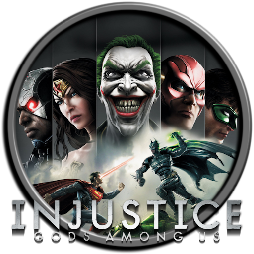

 Injustice: Gods Among Us
Details
 |
|
| Playtime | Not Played |
| Last Activity | Never |
| Added | 4/29/2025 4:54:57 |
| Modified | 4/29/2025 9:18:32 |
| Completion Status | Not Played |
| Library | Playnite |
| Source | |
| Platform | Sony PlayStation 3 |
| Release Date | 11/12/2013 |
| Community Score | 80 |
| Critic Score | 81 |
| User Score | |
| Genre | Fighting |
| Developer | High Voltage Software NetherRealm Studios |
| Publisher | Warner Bros. Interactive Entertainment |
| Feature | Controller Support Full Controller Support Multiplayer Single Player |
| Links | PCGamingWiki Official site HowLongToBeat IGDB SteamDB StrategyWiki MobyGames Wikipedia |
| Tag | Direct control Realistic Real-Time Side view Supernatural Unreal Engine 3 |
Description
Injustice: Gods Among Us is a 2013 fighting video game. It is the first installment in the Injustice franchise based upon the fictional universe of DC Comics. The game was developed by NetherRealm Studios and published by Warner Bros. Interactive Entertainment for the PlayStation 3, Wii U, and Xbox 360. It was released in April 2013 in North America, Europe, and Australia, and June 2013 in Japan. An expanded version of the game, titled Injustice: Gods Among Us – Ultimate Edition, was released in November 2013 for the PlayStation 3, PlayStation 4, PlayStation Vita, Windows, and Xbox 360. A free-to-play mobile app based on Injustice was also released for iOS and Android devices, which was then ported to arcade machines by Raw Thrills in the fall of 2017, months after the sequel's release. A prequel comic book series of the same name, written by Tom Taylor, was released beginning in January 2013.
Players select one of several characters from the DC Universe (consisting of both villains and heroes), to engage in combat, aiming to knock out their opponent. The game is set in a 2.5D environment: while character models and backgrounds are rendered in three-dimensional graphics, the characters are restricted to fight within a two-dimensional space. Injustice builds upon several aspects from NetherRealm Studios' previous title, Mortal Kombat (2011), including its controls, game mechanics, narrative-driven campaign, and online functionality.
The storyline is set in a parallel universe within the DC Comics' Multiverse, where Superman has become a tyrant and established a new world order after the Joker tricked him into killing Lois Lane and destroying Metropolis. In an effort to stop this, Batman summons counterparts of the League's members from the main universe to join his insurgency and end the totalitarian regime. The game received positive reviews from critics, who praised its story, gameplay mechanics, and use of the DC Comics license. Injustice became the highest selling game in the United States and United Kingdom during the month of its release. The game also won several awards for "Best Fighting Game" in 2013.
A sequel, Injustice 2, was released in 2017. Injustice, an animated film based on the game, was released in 2021.
Gameplay
Injustice: Gods Among Us is a fighting game in which players control characters with different fighting styles and special attacks, engaging in one-on-one combat to deplete their opponent's life gauge. The game is in 2.5D: movement is restricted to a two-dimensional plane, while the characters and backgrounds are rendered in three-dimensions. Unlike the traditional fighting game design involving multiple rounds with regenerative life bars, Injustice uses a scheme similar to the Killer Instinct series. Each match consists of a single round with each player bearing two life bars. The game utilizes a four-button control layout of light, medium, and heavy attacks, alongside a "character trait" button, which activates a unique ability or attack designed to showcase each character. For instance, Superman's character trait provides a temporary boost in strength, while Batman's character trait summons a swarm of robotic bats.
The stages, based on various locations from the DC Universe, such as the Batcave, Metropolis, and the Fortress of Solitude, feature interactive environments and multiple areas. If an opponent is hit with a heavy attack near a corner of the arena, it launches them, triggering a transition animation and taking the fight to a new section of the stage. Each section also contains objects that characters can interact with differently depending on their class. Characters fall into two classes: "power characters", who rely on brute strength and innate abilities, and "gadget characters", who use weapons, items, and other external mechanisms to win. For example, a gadget character like Batman can attach a bomb to a car to cause an explosion, while a power character like Superman will pick up the same car and smash his opponents with it. Players have the option to turn off interactive elements and stage transitions.
As characters perform special moves, block oncoming attacks, or get hit by the opponent, their "super meters" will gradually fill. Portions of the super meter can be used to execute enhanced special moves or counter enemy moves. With a full meter, players can unleash their strongest special attack. Players may also expend their meter to interrupt a combo and enter a wager battle, dubbed the "clash system", which combines individualized cutscene cinematics with the process of betting meter. A clash may be triggered by a player only after they have lost their first life bar. During the sequence, both players commit portions of their meter in secret, with the highest bidder winning the clash.
The story mode is split into several chapters. As the narrative plays out, the player swaps between different characters. Minigames are also incorporated into the story. The outcome of minigames can impact an upcoming battle, such as giving the player a health advantage over the CPU opponent. Additional game features include Battle Mode, Versus Mode, Training Mode, and S.T.A.R. Labs, which includes 240 character-specific challenges of varying difficulty. Online multiplayer modes include King of the Hill, a setup that allows up to eight players to spectate a match while waiting for their turn to fight, and Survivor, which carries over the current winner's health bar and character selection over each match. Playing through any of the game modes, including online matches with optional goal objectives, will net the player experience points that may be used to unlock alternate costumes, music, concept art, and other rewards.
Synopsis
The campaign of Injustice: Gods Among Us was written by NetherRealm Studios in collaboration with DC Comics' writers. Described by NetherRealm as "Story Mode 3.0", the Injustice campaign was approached similarly to Mortal Kombat vs. DC Universe and the 2011 Mortal Kombat reboot through the use of a cinematic narrative versus the traditional ladder-based single-player experience. According to lead designer John Edwards, the plot is meant to rationalize the game's fighting mechanics between characters that would not normally fight one another and explain how Batman can "stand toe-to-toe" with Superman. Writers Justin Gray and Jimmy Palmiotti served as story consultants to ensure that the comic characters kept their proper voices in Injustice.
Plot
In a parallel universe (known as Earth-49), the Joker tricks Superman into killing his pregnant wife Lois Lane and detonating a nuclear weapon that destroys Metropolis, killing millions. Mad with grief and rage, Superman murders the Joker, quickly losing his moral compass.
Elsewhere, in the prime DC universe, the Joker also attempts to destroy Metropolis with a nuke supplied by Lex Luthor, but the villains are foiled by the Justice League. When Batman confronts the Joker, the two are suddenly teleported into the parallel universe, where they find themselves pursued by One Earth Regime forces. Wonder Woman, Aquaman, Green Arrow, and Green Lantern are also teleported there. The latter leaves to recharge his power ring and rescues a captive Deathstroke, while having altercations with Cyborg, Raven, Sinestro, and his own Yellow Lantern counterpart, all members of the Regime. Meanwhile, Aquaman finds that in the five years after Superman killed the Joker, Superman has formed the One Earth Regime to enforce global peace through fear, and rules the Earth with an iron fist as a ruthless dictator, alongside many other heroes and villains, and killing any who oppose him. The parallel Batman established the Insurgency to oppose Superman's Regime, and the ensuing war between the two factions left the Justice League disbanded. Aquaman fights his counterpart in Atlantis, who is negotiating an alliance between Atlantis and the Regime, and encounters Ares, who is weak from the virtual lack of conflict and has allied with the Insurgency out of spite for the Regime.
Regrouping, the prime heroes meet Insurgency Batman and Lex Luthor (who in this universe is Superman's closest friend and an Insurgency mole) and receive nanotech pills derived from Kryptonian DNA, which increase their strength to Superman's level. Insurgency Batman and Luthor explain to the heroes that they teleported them into their universe to help access a kryptonite weapon, which requires a DNA sample of all core Justice League members; however, the prime Batman and prime Joker were teleported by accident. Elsewhere, Batman is mistaken for his Insurgency counterpart and captured by the Regime, while the Joker meets this universe's Harley Quinn, who is allied with the Insurgency and founded the "Joker Clan" in his memory. After helping the Joker Clan fight off a Regime attack at Arkham Asylum, the Insurgents infiltrate the Batcave and retrieve the kryptonite weapon. Meanwhile, in the prime universe, Superman and Flash's efforts to recover their comrades result in Cyborg being inadvertently teleported into the Regime's universe, where he joins the Insurgency and helps Deathstroke take over the Regime Watchtower.
After Regime Superman publicly announces his intentions to execute prime Batman, Insurgency Batman and Green Arrow break into Stryker's Island to rescue him, while Green Lantern, Wonder Woman, and Aquaman stage an attack on the Regime to distract them. After the Batmen and Green Arrow escape via the Watchtower's teleporter, Regime Superman realizes the Watchtower has been compromised and attempts to destroy it, but Deathstroke causes a chain explosion that sends him plummeting back to Earth. Luthor attempts to incapacitate the weakened Superman with the kryptonite weapon but is stopped by Shazam, allowing Regime Superman to kill him and destroy the weapon. Now aware of humanity's determination to depose him, Regime Superman decides to destroy Gotham City and Metropolis to keep Earth’s population in line, as well as invade the prime heroes' universe for their interference. When Shazam protests and invokes Lois' memory, Regime Superman murders him, causing Regime Flash to defect to the Insurgency.
During a Regime attack on the Insurgency's hideout, Wonder Woman is teleported by Ares to Themyscira, where she defeats her Regime counterpart and convinces the Amazons to defect to the Insurgency. Meanwhile, prime Batman convinces his counterpart to bring prime Superman over to help. During the ensuing battle, prime Superman overpowers the Regime's top lieutenants and persuades Yellow Lantern to surrender, before confronting his counterpart at the Fortress of Solitude, pitying his loss yet declaring the planet needs freedom. When Regime Superman vows to bring prime Lois over, his prime counterpart reminds him Lois would be horrified at the tyrant he has become.
Following Regime Superman's defeat, the Regime is dissolved, and its members imprisoned; Regime Flash is paroled, while Yellow Lantern is taken to Oa to be rehabilitated. The prime heroes and Joker return to their universe but not before Insurgency Batman and prime Superman oversee the imprisonment of the latter's counterpart within a cell emitting red sun radiation that renders him powerless. When Superman admits that he could also go down a dark path if a similar tragedy happened to him, Insurgency Batman assures that he will stand up to him if so. Superman merely chuckles and tells him to get in line. As they walk away, Regime Superman's eyes glow red, indicating he still has some degree of his powers left.
Characters
The roster was selected internally by NetherRealm Studios with input from DC Comics. The main goal during the selection process, which took around three to four months, was to create a cast featuring a wide variety of characters. Characters were chosen based on criteria such as size, ability, gender, popularity, and how well they fit within the Injustice storyline. The addition of each playable hero and villain required about six weeks of development. The characters were designed with the intent to make each fighter unique, and fighting styles and movesets were tailored to the lore and personality of each character. Ed Boon stated that DC Comics had given NetherRealm a large amount of freedom with their properties, allowing them to put their own spin on characters. Several other characters from the DC Universe, such as Darkseid, Scarecrow, Metallo and Gorilla Grodd, also appear as non-player characters, making cameo appearances in story cutscenes, stages and other game modes. Outside of the DC universe, Scorpion from NetherRealm's Mortal Kombat series appears as a downloadable guest character.
The playable characters are:
- Aquaman
- Ares
- Bane
- Batgirla
- Batmanb
- Black Adam
- Catwomanb
- Cyborg
- Deathstrokeb
- Doomsday
- Flash (Barry Allen)b
- Green Arrow
- Green Lantern (Hal Jordan)b
- Harley Quinn
- Hawkgirl (Shiera Hall)
- Jokerb
- Killer Frost (Louise Lincoln)
- Lex Luthorb
- Loboa
- Martian Manhuntera
- Nightwing (Dick Grayson)
- Raven
- Scorpiona b
- Shazamb
- Sinestro
- Solomon Grundy
- Supermanb
- Wonder Womanb
- Zatannaa
- Zoda
Additionally, several characters are playable as alternate skins for existing characters. They include:
- Batman (Terry McGinnis)c
- Batman (Thomas Wayne)a
- Cyborg Supermana
- Flash (Eobard Thawne)a
- Flash (Jay Garrick)a
- Green Lantern (John Stewart)a
- Hawkgirl (Kendra Saunders)a
- Nightwing (Damian Wayne)
The iOS and Android version of the game features several exclusive characters:
- Arkham Knight
- Batgirl (Cassandra Cain)
- Darkseid b
- Deadshot
- Flash (Wally West)
- Green Lantern (Jessica Cruz)
- Killer Croc
- Reverse-Flash
- Static
.mw-parser-output .citation{word-wrap:break-word}.mw-parser-output .citation:target{background-color:rgba(0,127,255,0.133)}^a : Available as downloadable content; included in the Ultimate Edition. ^b : Previously appeared in Mortal Kombat vs. DC Universe. ^c : Unlockable in the console version through the mobile version.
Development
Injustice: Gods Among Us was first announced on May 31, 2012. According to Ed Boon, the main goal heading into Injustice was to create a game outside of the Mortal Kombat series that was dramatically different within the fighting game genre. Producer Hector Sanchez stated that NetherRealm Studios did not feel constrained by the parameters of Mortal Kombat, allowing the developers to take more design risks with Injustice, such as removing Mortal Kombat's traditional dedicated block button. Similar to Boon's previous DC-related title, Mortal Kombat vs. DC Universe (2008), the use of the DC Comics license implied restrictions to the amount of violence in the game; however, Boon intended to push the "Teen" rating by replacing violence with "crazy, over-the-top action." When questioned if the studio's past experience with Mortal Kombat and its characteristic violence would influence Injustice, Boon replied that he wanted to keep the two titles as separate entities.
The online mode in Injustice was built upon the foundation laid from Mortal Kombat (2011). Due to complaints about severe lag in the online multiplayer portion of Mortal Kombat, Boon reported that the development team had looked back upon their past mistakes and created a "new, more elaborate system" for an improved online experience. Senior Producer Adam Urbano stated NetherRealm Studios spent two years of development focusing on netplay. During development, NetherRealm shared their idea for an automated system to push Injustice downloadable content to all users' consoles. The game would connect to the Internet during use and automatically download the information required for players who have bought DLC characters to play against others who have not. The system also allows NetherRealm to quickly send hotfixes to patch noticeable glitches.
Like Mortal Kombat vs. DC Universe and Mortal Kombat, Injustice runs on the Unreal Engine 3, which was modified to suit fighting games. In the first Injustice development diary, NetherRealm Studios proclaimed that several technical advancements had been made since the release of Mortal Kombat in 2011. Sanchez stated that their "KoreTech team" had pushed the boundaries on their graphics engine. Urbano added that the game features a revamped lighting solution, enabling more dynamic lighting in terms of characters and environments. A new "character material" system was created to portray characters with increased graphical detail. Injustice also utilizes a multi-threaded rendering engine, allowing the game to display approximately three times the amount of objects on screen at a single time than Mortal Kombat.
Marketing
Prior to the game's release, Warner Bros. Interactive and DC Entertainment launched a 10-week-long online marketing campaign called the Injustice Battle Arena. The web series, hosted by Taryn Southern, featured weekly match-ups between the playable cast in a tournament-style format. Each week, the arena was updated with different versus scenarios. Fans could vote for their favorite characters, and a video, depicting the winner of each round, would be released following each voting period. Videos detailing the skills and strengths of the combatants, including vox pop and celebrity interviews, were released alongside each new pair of challengers. Voters could redeem free rewards, ranging from Xbox Live avatar accessories to a downloadable character skin based on Green Arrow's appearance in the television series Arrow. Participating fans based in the United States were also eligible to win weekly prizes.
A demo version of the game was released as a download for the PlayStation 3 and Xbox 360 on April 2, 2013, in North America, and April 3, 2013, in Europe. The demo showcased Batman, Wonder Woman, and Lex Luthor, in the Gotham City stage, with Doomsday as an unplayable boss.
Release
Injustice: Gods Among Us was released on April 16, 2013, in North America, April 17 in Australia, and April 19 in Europe for the PlayStation 3, Wii U, and Xbox 360. Certain Australian retailers, including JB Hi-Fi and EB Games, broke the street date, selling copies on April 15, 2013. The release of the Wii U version of Injustice was delayed in the United Kingdom until April 26, 2013. The game was released later in Japan on June 9, 2013, for the PlayStation 3 and Wii U. It was also added to the Xbox One's library of backward compatible Xbox 360 games in December 2016.
An album featuring music from several artists including Rise Against, Depeche Mode, MSTRKRFT, Awolnation, Minus the Bear, and Zeus, was released by WaterTower Music. Titled Injustice: Gods Among Us - The Album, the album was made available at digital retailers on April 16, 2013, to coincide with the release of the game. The collection was later released on CD on April 23, 2013.
Pre-order bonuses
Warner Bros. Interactive partnered with several retail outlets on a pre-order incentive. Pre-orders from EB Games, GameStop, and Game gave players access to the Red Son Pack, a DLC pack inspired by the Superman: Red Son comic book limited series, containing alternate Red Son skins for Superman, Wonder Woman, and Solomon Grundy, and 20 additional missions set within the Red Son storyline. Pre-orders from Walmart carried the Arkham City Skin Pack, containing downloadable costumes for Batman, Catwoman, and the Joker, and a bonus copy of Mortal Kombat vs. DC Universe. Pre-orders from Best Buy and Amazon Germany included the Blackest Night DLC Pack, which featured an alternate Batman skin, based on his Black Lantern design from the Blackest Night storyline, and an exclusive "zombie mode", which transforms all characters into the undead.
In addition to the standard edition, the Collector's Edition was made available for purchase for the PlayStation 3 and Xbox 360, which included a steelbook case, a collectible figurine, a digital download code for the animated film Justice League: Doom, the first issue of the Injustice comic book series, and three exclusive costumes for Superman, Batman, and Wonder Woman based on their appearances in The New 52. The North American and European versions of the bundle offered different figurines. The North American release offers a 13-inch (33 cm) statue featuring Wonder Woman fighting Batman, while the European release offers a smaller 9-inch (23 cm) statue of the two. The Battle Edition, exclusive to GameStop and EB Games, included a light weight fight stick controller and the three DLC skins. In the United Kingdom and Australia, the Special Edition was available, exclusively through Game and EB Games respectively, containing the steelbook case and the Red Son Pack.
A Season Pass available to Xbox 360 and PlayStation 3 users granted access to the Flashpoint Skin Pack, featuring alternate skins for Aquaman, Deathstroke, and Wonder Woman, along with the first four downloadable characters at an overall discounted price. To prevent conflicts between online players who purchased DLC and those who did not, free compatibility packs containing additional character skins were released alongside them. On April 17, 2013, Lobo was officially revealed as the first DLC character during the Injustice Battle Arena finale. Lobo was released on May 7, 2013. On May 3, 2013, Batgirl was revealed as the second DLC character, becoming available for download on May 21, 2013. Scorpion, a recurring character from the Mortal Kombat series, was revealed as the third DLC character on June 3, 2013, and became available for download on June 11, 2013. Scorpion's appearance in Injustice featured a new costume design by comic book artist Jim Lee. The final character in the Season Pass, General Zod, was revealed on June 12, 2013, on an episode of the late-night talk show Conan. Zod was released on July 2, 2013. S.T.A.R. Labs missions for the first four DLC characters were also released as part of the Season Pass. The four DLC characters became available for Wii U owners on July 3, 2013.
On June 6, 2013, Ed Boon announced that at least one additional DLC character would be created for the game due to fan demand. Boon had previously held a poll on his Twitter to determine which DC Comics characters Injustice fans would like to see added to the game. Martian Manhunter, who had been left off the polls due to having the strongest fan demand, was revealed as the fifth DLC character during a special Injustice presentation at the 2013 Evolution Championship Series despite what happened to him in the prequel comics. Martian Manhunter was released for the Xbox 360 and PlayStation 3 on July 30, 2013, bundled together with John Stewart as an alternate skin for Green Lantern. Shortly before the release, Boon revealed on Twitter that there were further plans to develop downloadable content, with the sixth DLC character being a "big fan favorite request". On August 5, 2013, the character was revealed to be Zatanna, who placed first in the Twitter poll according to Boon. She was bundled with a new skin for Superman based on Cyborg Superman, released on August 13, 2013.
Prior to the game's release, NetherRealm Studios developed a free-to-play mobile app of Injustice: Gods Among Us, which was released for iOS devices on April 3, 2013. It was ported to Android systems on November 21, 2013. The app utilizes a collectible card-based battle system, and can be used to unlock bonuses in the Xbox 360 and PlayStation 3 versions of the game. The app also puts players into a group of 3 combatants to challenge famous D.C. characters.
The Wii U version does not support this feature. Multiplayer functionality was added to the iOS version in an update on April 24, 2014.
The Injustice: Gods Among Us comic book series was announced by Ed Boon on October 5, 2012, during the EB Games Expo. The series serves as a prequel detailing the events leading up to the game, as well as those that happen in the interval between Superman's murder of the Joker and the discovery of the primary universe. The series was first written by Tom Taylor and illustrated by a number of artists, including Jheremy Raapack, Mike S. Miller, Bruno Redondo, Tom Derenick, and others. The comic was released digitally beginning on January 15, 2013. The series was later issued in regular comic book form, and eventually a collected edition. In December 2014, Tom Taylor announced that he would be leaving the series and left after writing Injustice: Year Three #14, with Brian Buccellato replacing him by continuing the story into Year Four and Five. The final chapter of the series was released in September 2016, leaving the story incomplete; another comic book series, titled Injustice: Ground Zero, followed afterwards, which picked up the story and concluded the retelling of the game's events from Harley Quinn's perspective.
On October 7, 2013, Warner Bros. Interactive announced the Ultimate Edition, which includes all previously released downloadable content for Injustice: Gods Among Us. The Ultimate Edition was released on November 12, 2013, in the United States, November 27, 2013, in Australia, and November 29, 2013, in Europe for the PlayStation 3, PlayStation 4, PlayStation Vita, Windows, and Xbox 360. The American release was also bundled with the game's official soundtrack.
Reception
Critical response
Injustice: Gods Among Us received positive reviews from critics. Aggregating review website Metacritic gave the Wii U version 82/100, the Xbox 360 version 81/100, and the PlayStation 3 version 78/100. The Ultimate Edition was given 80/100 for the PlayStation 4, and 79/100 for Windows. The iOS mobile app received mixed reviews, with 69/100.
IGN's Vince Ingenito labeled the game as "both a very good brawler and a big old sloppy love letter to fans". Ingenito praised the story mode, unique fighting game mechanics, and the overall use of the DC license, but criticized rough cutscene graphics, stating that bland textures and poorly modeled buildings eroded their visual impact. Game Informer's Andrew Reiner considered the game as "a finely tuned fighter" that "nails the spectacle of a superhero brawl". Reiner praised NetherRealm Studios for delivering a "great fighting game experience", claiming that the NetherRealm Studios' appreciation for the DC universe blended nicely with their Mortal Kombat formula.
Eurogamer's Matt Edwards praised the rich amount of single-player content, highlighting the S.T.A.R. Labs mode, but was concerned about the game's online stability, writing that improvements made over Mortal Kombat to reduce latency issues "[appeared] to be marginal rather than game changing". GameSpot's Maxwell McGee felt that while Injustice provided "a complex fighter with some unique twists", the game fell short when compared to its contemporaries. McGee was critical of the story, describing the premise as "so ridiculous it borders on parody", and lamented the lack of instructional features for new players and replay support.
Mikel Reparaz of Official Xbox Magazine praised Injustice for its "fast, destructive, and extremely accessible" gameplay, calling the game "one of the most enjoyable 2D fighters in years". Electronic Gaming Monthly's Ray Carsillo awarded the game a near-perfect score, praising the story, gameplay mechanics, and collectibles, while faulting its long and frequent load times. Brett Molina of USA Today gave the game 3.5 stars out of 4, stating that "NetherRealm [had] created an impressive video game package with Injustice, combining superheroes and villains comic book fans can appreciate with a fighting style that should appeal to players at any level."
Injustice: Gods Among Us won the award for "Best Fighting Game" of E3 2012 by the Game Critics Awards. The game also received "Fighting Game of the Year" awards in 2013 from IGN, GameTrailers, Game Informer, the VGX, and the Academy of Interactive Arts & Sciences' D.I.C.E. Awards. At the 2013 National Academy of Video Game Trade Reviewers (NAVGTR) awards Injustice: Gods Among Us won Game, Franchise Fighting. At the 2014 SXSW Gaming Awards, Injustice: Gods Among Us won the Excellence in Convergence Award.
Injustice: Gods Among Us was the highest selling game in the United States during its release month of April, 2013. It sold 424,000 copies as reported by industry analysts Cowen and Company, the only game released during that month to sell more than 250,000 copies. According to the NPD group, the game would later continue to stay as the top selling game in the US charts into May and stayed within the top 10 in June. Injustice would also top the all-format game charts in the UK following its week of release.
The game was temporarily banned in the United Arab Emirates and Kuwait. Originally, the title of the game was rebranded as Injustice: The Mighty Among Us for promotional uses in those areas. It is speculated that Injustice was banned because of the inclusion of the word "Gods" in the title (as referring to God in the plural is against the shahada), the cleavage exposed in the outfits of some female characters, and overall bloodiness. There is also a chance that the global tagline of the game itself may have been thought as a violation or inconsideration for Islamic morals in the United Arab Emirates. Eventually, the ban in the United Arab Emirates and Kuwait was lifted.
Sequel
On June 8, 2016, Injustice 2 was announced by Warner Bros. Interactive Entertainment and NetherRealm Studios, released on May 16, 2017, for the PlayStation 4 and Xbox One. The sequel continues the story established in Injustice: Gods Among Us, with the alternate universe Batman and his Insurgents working to prevent a new threat while stopping the remnants of Superman's Regime who seek to restore his rule. Various gameplay mechanics from the first installment return, including super moves, character traits, stage transitions, and clashes. Injustice 2 introduces a loot-dropping system, known as the "Gear System", which provides character-specific costume pieces and equipment; players are able to customize the look of their characters and upgrade their abilities, such as increasing their speed, strength, or health.
In other media
On May 19, 2020, it was announced that an animated Injustice movie was in the works as part of the DC Universe Animated Original Movies line. The film stars a different voice cast separate from the games itself, with the story of the movie being based on the Year One Comic. The film was released on digital on October 12, 2021, and on DVD and Blu-ray on October 19, 2021.